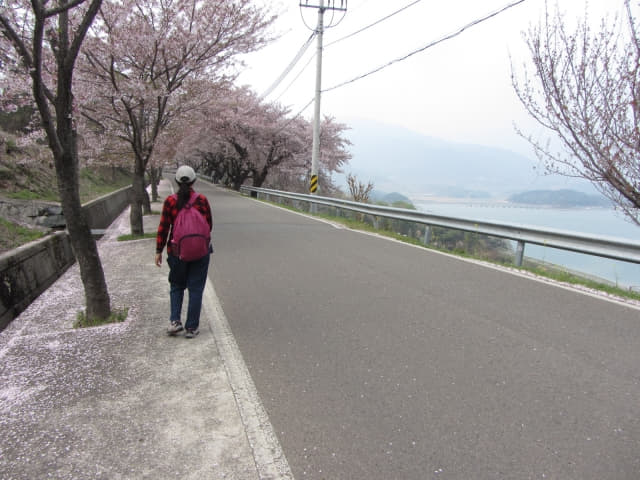

在旺池巴士站下了車, 從露梁-枉地櫻花路東面的起點一直走, 沿途櫻花和山下漁港景色十分優美, 目不暇給, 走走看看, 不經不覺來到一個分叉路口, 沿右邊坡度往下走便是海邊的旺池燈塔村 。我們打算繼續向前再走多一段櫻花路, 才下山沿海港走往南海大橋。

繼續沿露梁-枉地櫻花路慢慢向前走。
花瓣隨風飄揚, 好像下雪一樣, 非常動人。
慢慢向前走。這裡比較冷門, 雖然今天是星期日假期, 但沿途都十分清靜。


山下的小屋。
終於遇上旅客了, 原來駕車帶汪汪來散步。
粉紅色的花瓣隨風飛舞, 如夢如幻, 令人陶醉。
「韓國南海郡 露梁-枉地櫻花路 櫻花雨」影片。
水原勒 (수원늘 Suwonneul)巴士站 水原勒入口
已經來到水原勒巴士站, 我們會從這裡暫時離開露梁-枉地櫻花路, 從水原勒入口沿小路往山下的海港, 然後循海邊走往南海大橋。